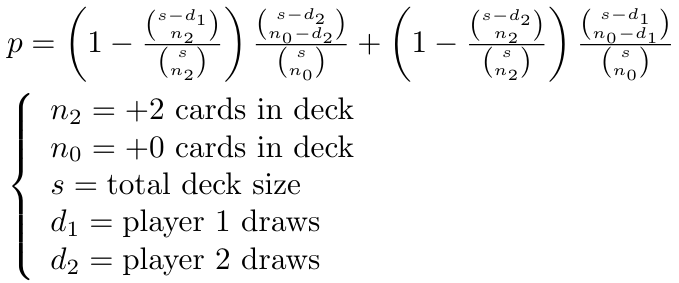
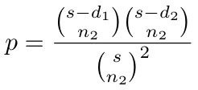
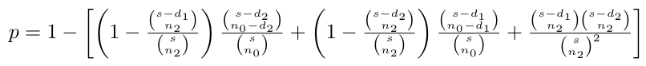

Hive of Lies - Solo Developer
4-12 player board-game inspired social deduction
Hive of Lies was a real test of my ability to create a whole game from the ground up by myself, and I am incredibly proud of the result. It is currently a fully functional vertical-slice with multiplayer gameplay using Steam peer-to-peer networking. It is an absolute blast to play and I am hoping one day I can find some funds to contract some art, animation, and audio to really bring the whole game to life.
Gameplay Footage
Design Thoughts
Inspiration
Social deduction as a genre is possibly my most played genre of games as a whole. I ran a TTT server for my friends that we'd play on every week or so for a few years, then when I started getting into physical board games would play a game of Secret Hitler and several games of Coup every day, also for a few years. I have always sought out new social deduction games to play and spectate because it is a genre that generally fascinates me.
The main drive of making Hive of Lies though was ultimately - after a couple hundred games - feeling dissatisfied with Secret Hitler. There is a lot I love about it, but enough that starts to fall a bit apart when you identify strategies that I wanted to see if I could make a social deduction game that does everything I love about Secret Hitler without the issues I now can't unsee.
It's a Party Game
One of my main focuses in Hive of Lies was to keep all players directly involved in the game. One issue you will hear a lot in discussions surrounding Secret Hitler is that the less outspoken players can struggle to feel like they're involved in the game. I find this really interesting because this isn't necessarily a mechanical failing of the game. In the right groups this is a complete non-issue, and is part of the reason the game always worked so well for me. But it is definitely a problem. On bringing the game to new groups with new people, there are those that just find it hard to speak up and find themselves sitting out and not really playing. I want Hive of Lies to be an inclusive and empowring experience so I absolutely wanted to find some way to avoid these pitfalls and enable all players of the game, even those less socially confident, to feel like they are impacting the game in a real and significant way
Unique Roles
The best way to empower players around the table is to give them abilities that the other players simply do not have. If one socially-confident player wants to run the table and speak over everyone, they are now playing the game badly because their role will simply just not be suited to certain tasks and they will have to rely on their teammates for that. Where in Secret Hitler it can be a liability to pick the less socially-confident players in critical moments because you may lose votes you wouldn't otherwise, in Hive of Lies it is encouraged and rewarded.

Player 3 gets away with their lie, but player A and player 2 clash and now everyone knows one is a traitor. Player 1 cannot think of a role in time and outs themselves as a traitor.
Adding unique roles poses a small issue for a social deduction game however. If every player around the table agrees to say the name of their role out loud then it can force the hidden minority team into a real bind. First if they don't know the names of any roles they are just immediately outed as a traitor which is unnecessarily punishing to new players, but even if you have played enough to know one or two role names you could say then you put yourself in the position where you could accidentally say the name of a role someone else has and narrow down the possibilities for traitors. There are a few possible solutions to this problem. Werewolf and Town of Salem have basic Villager roles you can claim to be relatively safely with the only risk being that any non-villager claimants are more likely to be telling the truth, but also these games have some roles that are notably stronger than other roles on the villager team that may also want to claim to be a villager for the sake of not being killed by a traitor.
I wanted a different solution. I didn't want any player to be particularly stronger than any other player, and I didn't want any player to be stuck with a basic "Villager" role because that only half-solves the aforementioned issue. I instead want players to just not tell other people their role. Because of the nature of board games you can cheat whenever you like and as such there is no reason to play a game with anyone who doesn't play by the rules. Because of this you can implement social rules such as "do not say X" that are only enforcable by the players themselves. Hive of Lies, however, is a video game so no such social rule can exist. Instead I needed to ensure that the optimal play pattern for winning a game of Hive of Lies involves ensuring nobody else knows what your role is.
The Sting
At the start of each game of Hive of Lies, every Wasp (traitor) is given the name of a role that one of the Bee (innocent/villager) players has. At any time they may click the "sting" button - costing some of their accumulated currency - and choose a player they believe has the role they are looking for. If they are correct, they win the game on their own. If they are wrong they are eliminated from the game.
The Sting is the beating heart of Hive of Lies. The entire game feels like it is riding on a knife's edge because any move you make could give away the role you have and end the game on the spot. Players now simply cannot reveal their roles, and if anything, must now use deception to make people believe they have a role other than the one they actually have. This is the one mechanic that sets Hive of Lies apart from all other social deduction games.
Game Balance
A game of Hive of Lies is comprised of many smaller missions which a subset of the players chosen by one team leader will work together to succeed. Getting the balance right for these missions, and the game as a whole, is very precise. The main forces you need to keep in check are as follows:
- A mission in which every participating player is a Bee must not always result in a victory. The Wasp players should always have at least some ability to convince people that their failure was bad luck, and Bees should sometimes come under suspicion when they get unlucky.
- A mission in which every participating player is a Bee must result in victory often enough that a failed mission casts suspicion on the players involved.
- If Wasps do not act for the entire game, the Bees will win with as close to 100% odds as possible.
- If Bees win the social game, they should also win the mechanical game. That is - if the Bees determine who all the Wasps are, they should be able to lock up the game from that position.
- If the players selected to participate in a mission are chosen completely at random, there should be a high (but not guaranteed) chance that there are enough Wasps on that mission to sabotage it. The Bees should start from the losing position and use the information gained throughout the game to start winning. The Wasps should have to weigh up early game progress with giving away information.
All of these forces when tweaked just right should result in an incredibly satisfying and enjoyable game. The main challenge is getting to that point.
Every player in Hive of Lies has a deck of cards comprised of cards of different values - 0, 1, and 2. When on a mission, players hold one card in their hand and may pay a currency to redraw this card. Once every player is happy with the card they hold, they may sum the total of their played cards together. If it is greater or equal to the mission difficulty then the mission is a success and the Bees are now one point closer to winning the game as a whole. If the total is not enough, the mission is a failure and the Wasps are now one point closer to winning the game.
Because the missions are fairly complex, there is a lot to balance here. If during playtesting it is found that the missions are too easy and the Bees are winning more than they should, what do we change? Add more 0 cards? Reduce the number of 2 cards? Make redraws more expensive? Increase the mission difficulty?
Any of these factors you change will have knock-on effects for most or all of the forces I mentioned above so it can be impossibly difficult to know what to change and how much. To solve this problem I decided to crack open excel and attemped to model the problem mathematically.
There is a lot of information in this spreadsheet, so I'll go over it bit by bit.
The ultimate goal here is to model the overall mission success rate when two players are trying to succeed a mission. We stick to two player missions here because adding more players exponentially increases the complexity of the calculations.
To start with we set the mission difficulty to be 3. This number is chosen specifically as no player can win the mission solely by themselves, but one player is still required to draw their highest value card in order to win. Having one factor locked in place also helps much easier create the model. The mission difficulty being 3 means we can categorise all failed missions into one of two camps:
- Neither player plays a +2 card
- One player plays a +2 card, but the other plays a +0 card
If neither player plays a +2 then a total of 3 cannot be reached, and if a player does play a +2 then the only outcome in which they fail is when a +0 is played by the other player. Because these two situations are mutually exclusive we can model each individually, add their probabilities, and take the inverse to work out the probability of a mission succeeding. All probabilities here are calculated with the following AI pattern from both players:
- If hand card is a +2, play it.
- If no redraws left, play hand card
- If hand card is a +0, redraw it
- If hand card is a +1, redraw if a +0 has been played or if a +1 is held by the other player, play if a +2 is played. Else hold until one of those conditions is met.
- Repeat from the beginning until a card is played
The nice thing about this algorithm is that it is almost mathematically identical to just playing the highest value card in the top d cards of your deck, where d is the number of draws the player has available. The only slight difference crops up when both players are holding a +1 card in their hand. In this situation it is impossible to know which player should redraw first as you cannot know what cards are going to show up later on in the deck so you could end up redrawing and getting stuck with a +0 when the other player redraws into a +2. This situation will have a reasonable impact on the odds of mission success, but for the purposes of modelling a mission mathematically it is negligible enough to ignore for how much extra complexity it would require to model exactly. Think of it like assuming gravity is 9.8m/s^2 and there are no resistance forces when modelling a system in mechanics. The resulting probability is still incredibly useful for understanding game balance, so long as you are aware that it might appear marginally higher than it feels due to this discrepency.
One player plays a +2 card, but the other plays a +0 card
We can determine the odds that one player is stuck with a 0 by considering all the deck combinations in which the first d cards in the deck are 0 cards, where d is the number of draws the player has available. This can be determined by the expression (s-d)C(n-d) where s is the total deck size, n is the number of +0 cards in the deck in total, and d is the number of draws. This is because the first d cards in the deck are fixed as 0 cards, so we look at how many ways there are to arrange the other +0 cards in the remaining deck. The arrangements of the +1 and +2 cards are not relevant to this case, so we can divide this expression by the total arrangements of +0 cards in the full deck (sCn) to determine the odds of this arrangement.
We then look at the next player and determine the odds of them playing a +2 card. This can be simplified as saying at least one +2 is in the top d cards of their deck where d is the number of draws the player has available. To do this we can take the situation in which no +2 cards are in the top d cards and take the inverse of that probability. This can be determined by the expression (s-d)Cn where s is the total deck size and n is the number of +2 cards in the deck total. This is because the first d cards are fixed as cards that aren't +2 cards, so we can look at the arrangements of total +2 cards in the remaining s-d cards. Dividing by the total arrangements of +2 cards (sCn) gives us the probability of no +2 cards in the top d cards, so we then minus this probability from 1 to find the probability of at least one +2 card in the top d cardsl.
The final step here is taking the odds of both of these things happening simultaneously by multiplying them together, but because either player could be the one to draw a +2 and either player could be stuck with a +0, we need to add the probability of the same situation with the roles reversed. This makes our final formula:

Neither player draws a +2 card
We worked out the odds of a player not drawing a +2 card in the previous section as (s-d)Cn/sCn, so to work out the odds of this happening to both players simultaneously we simply multiply the odds for each player, giving us:

Odds of Mission Success
We now have the equations for both mission failure outcomes, and as mentioned before they are both mutually exclusive, so now to determine the equation for the odds of a mission success we can simply add the two probabilities together and take the inverse. This gives us the following:

This equation is incredibly useful to us now. We can use it to create an excel table in which we can modify all the variables and display the corresponding odds. Knowing the winrate of a given deck makeup gives you a great starting point for balancing the game. If it feels like Bees win too often when the success rate is 70%, we can modify the deck until it is a 65% success rate and see how that now feels. We can also use it to balance the two mission fail conditions. They both feel incredibly different to play, so ensuring they both show up often enough leads to more variety in mission outcomes. We can now also very easily balance the total size of the deck to increase or decrease the impact additional redraws will have. A larger deck makes redraws less effective than with a smaller deck, so we can now use the visual percentages of the tables with player and playtester feedback to ensure that the strength of a redraw feels appropriate.